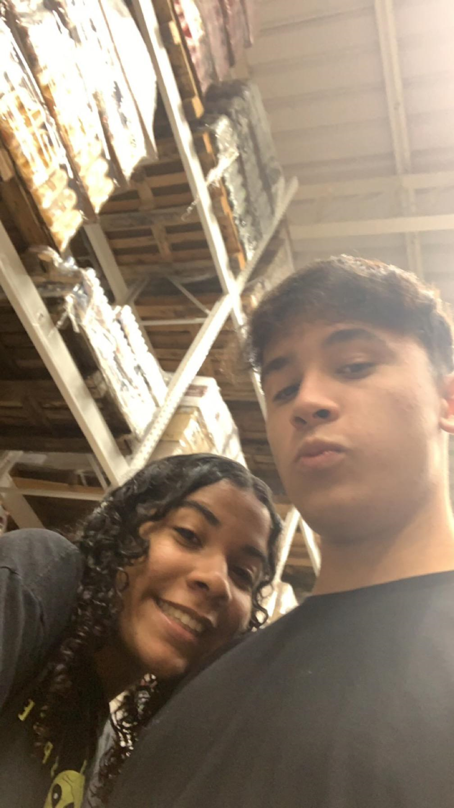
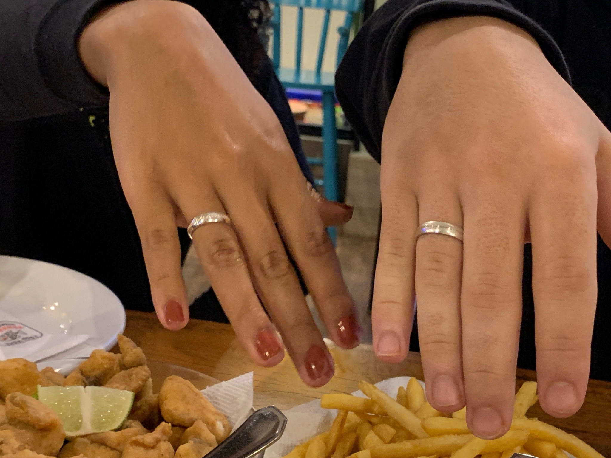

Meu amor,
Nosso dia 9! É só de pensar que o coração dispara de novo. Lembra quando eu te falava que tava quebrando a cabeça pra te pedir em namoro? Aquelas reuniões secretas com o Jonatas e o André, e a gente pensando em mil planos que no fim não deram em nada hahaha.
Chegou o 9 de novembro de 2023, o grande dia. Ainda dou risada lembrando da desculpa que te dei pra gente ir pra Toledo: "Vamos comemorar o aniversário da minha mãe!". E você, tão linda e inocente, caiu no meu papinho.
Chegamos lá, e fizemos aquela foto à esquerda no mercado – você nem imaginava o que estava por vir! A gente conversando, se zoando entre as prateleiras, o coração a mil, mas tentando disfarçar. Até que chegou a hora de ir para o nosso lugar.
E então, lá estávamos nós, no Pantanal. Pedimos nossa janta, e eu... ah, eu estava muito nervoso Mas era tudo o que eu sempre sonhei, e eu precisava fazer. Combinei com meus pais pra gravarem, e então, com o coração na boca, eu fiz. Fiquei esperando você ver a aliança (um agradecimento eterno ao Reencontro, que me deu o número do seu dedo e a aliança perfeita!). Aquele segundo em que você olhou e a ficha caiu... foi mágico. E quando você disse "sim", meu mundo virou de novo, mas dessa vez, de um jeito tão bom que parecia um filme! Estava realizando o meu sonho, o nosso sonho.
E depois daquilo? Ah, meu amor, o resto é a nossa linda história, que escrevemos juntos a cada dia.
